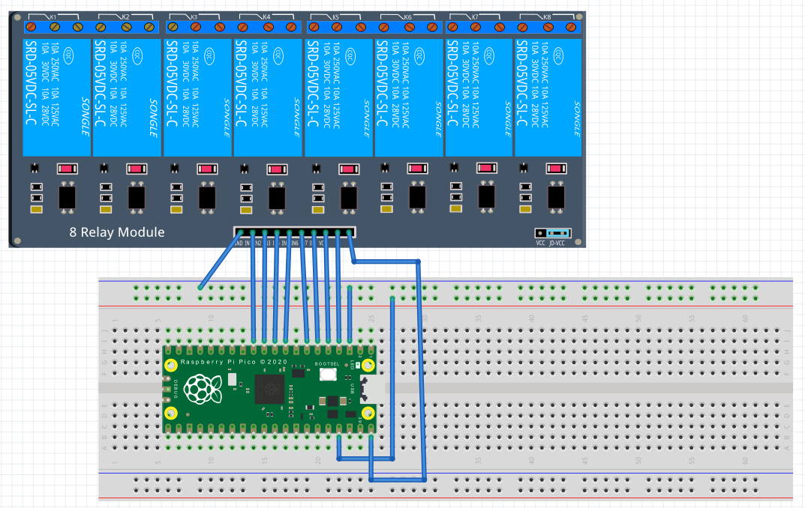

Pluto Pico
We noticed that in previous groups the project was lacking embedded software developers. Each group always started their project by running motors from scratch. In order for the project to grow each year this needs to stop!
That's why pluto-pico exists. Pluto-pico encapsulates any embedded software part and to make it easy to use and most suitable for pluto and its future developers.
Pluto can be used independently to any system. All it needs is a USB host in order to connect to the pluto-shell. That can be a raspberry pi but also any kind of computer.
Pluto-pico is also cheap since it runs on a 7.50€ raspberry-pico making so it is possible for for any project participant to have one pluto-pico to test and verify.
Pluto-shell provides a user-friendly and easy to use interface to test motordrivers or sensors that are used for Pluto.
Since the application has been developed as a zephyr application it is also possible to exchange the microcontroller or do any changes on the embedded part.
Overview
System
bla
| Functional component | Amount | Positioning | Function |
|---|---|---|---|
Relay
|
8 (on one PCB)
|
No special needs
Please review datasheet
for dimensions
|
Switches various
electrical loads. Such as:
Lights, Fan, beer-cooler
|
Motordriver
|
2 (on one PCB)
|
No special needs
Please review datasheet
for dimensions
|
Controls motor speed
of each motor
(left & right)
Defines speed &
direction of Pluto
|
Distance sensor
|
4
|
Positioned at each
chain track (one in front,
one in the back)
Please review datasheet
for dimensions and specs
special requirements to
visual area apply!
|
Measures distances
of each chain
to obstacle of that chain
Will act as a part of
safety concept to stop
Pluto if an movement
is not possible.
|
GPS
|
1
|
Consists of antenna
and module
Antenna needs to be
flat and exposed to sky
|
Determines current
position and speed
of Pluto
|
Compass
|
1
|
Needs to be away of
any magnets and flat
|
Determines current
orientation of Pluto
|
Temperature sensor
|
3
|
Needs to be at
location of
temperature
measurement
|
Determines current
temperature of:
Battery cells, pluto-ros2
or Beer
|
Battery cell measurement
|
4
|
No special needs
|
Monitoring voltage
of battery cells
|
Emergency Switch
|
1
|
Needs to be reachable
for Pluto users
|
Emergency switch to
turn OFF PLuto at any
moment
|
| Part | Amount | Price per Unit | Sources |
|---|---|---|---|
Raspberry Pi Pico
|
1
|
4.90€
|
|
8 channel relays
|
1
|
7.85€
|
|
MDD10A dual motor driver
|
1
|
23.90€
|
|
NEO 6M GPS module
|
1
|
6.90€
|
|
VL53L0X distance sensor
|
4
|
7.49€
|
|
MCP9808 temperature sensor
|
8
|
5.90€
|
|
HMC5883L compass sensor
|
1
|
4.45€
|
|
ADS1115 ADC expansion board
|
1
|
3.86€
|
|
LM2596 DC-DC step down converter (set of 3)
|
1
|
5.29€
|
|
Sum Pluto-Pico
|
1
|
134.31€
|

Microcontroller
Pluto_pico uses the Raspberry Pi Pico microcontroller. To communicate with pluto-pico use the pluto-shell. Simply connect a usb-cable to and open a serial connection. A list of supported commands can be found in the table below.
Working with Pluto_pico
Introduction
Pluto_pico simplifies the process of developing embedded applications, allowing developers to focus on higher-level functionality. Designed specifically for the Raspberry Pi Pico, it leverages the capabilities of the RP2040 microcontroller to provide a robust and versatile platform for robotics and other embedded projects.
Prerequisites
Before beginning, ensure you have the following:
- A Raspberry Pi Pico with an RP2040 microcontroller
- A USB cable compatible with the Raspberry Pi Pico
- The zephyr.uf2 file specific to the Pluto_pico project
Flashing Pluto_pico
1. Prepare the Hardware: Connect the Raspberry Pi Pico to your host PC using the USB cable. Ensure that you hold down the BOOTSEL button on the Pico while connecting.
2. Enter Mass Storage Mode: Once connected, release the BOOTSEL button. Your Raspberry Pi Pico will now operate as a mass storage device.
3. Flash the Firmware: Drag and drop the zephyr.uf2 file onto the Raspberry Pi Pico drive. This process will flash the firmware to the Pico's internal flash storage. This step is necessary once for each version of the firmware.
Using the Pico-Shell (version >= v0.1.0)
- Establish a Serial Connection:
- To interact with Pluto_pico using the pico-shell, a serial port connection is required.
- You can use a terminal program like PuTTY or minicom on your PC to connect to the serial port. The specific port can be found in your system's device manager (for Windows) or /dev directory (for Linux and macOS).
- Select a baudrate of 115200 in your terminal program.
- Verify the Connection:
- Once connected, the onboard LED on the Raspberry Pi Pico will start flashing at a frequency of 1 second. This indicates a successful serial connection.
- Using Pico-Shell:
- Once connected via the terminal program, you can interact with the Pluto_pico through various commands.
- The pico-shell allows you to configure and control external peripherals, read sensor data, and manage the robot's operations. Try one of the commands from the following table.
Command Overview
The following table contains in short all available commands.
Explore the detailed command list and examples provided in the subsequent sections to fully utilize the capabilities of Pluto_pico.
Happy developing!
| Command | Description | Supported Arguments |
|---|---|---|
ANY_COMMAND |
Calling without arguments:
Detailed info about command
only excpetion:
version |
--helpshort info about command
|
echo |
returns <message>
pluto-pico version: >= v0.1.0
|
<message>respond with message
|
version |
returns pluto-pico version
no argument := APP_VERSION_STRING
pluto-pico version: >= v0.1.0
|
--build-verAPP_BUILD_VERSION
|
relays |
control relays of pluto-pico
pluto-pico version: >= v0.1.0
|
--set-bytes <value[0..0xFF]>--set-relay <name> <state[0||1]>--list-relayspluto-pico version: >= v0.2.0:
--get-relay <name> |
Developing Pluto_pico
Relays of Pluto_pico
Pluto_pico is able to control 8 relays such as from: https://www.az-delivery.de/products/8-relais-modul.
It is important that the jumper is set from VCC to JD-VCC!
Each relay has one NC-contact(normally-closed contact) and one NO-(normally-closed contact).
- If the relay is OFF the NC-contact is closed and the NO-contact will be open.
- If the relay is ON the NC-contact is open and the NO-contact is closed
- At startup each relay is set to OFF!
Relays that are ON will trigger a bright red led. Before startup the leds will have a weak red led. This is due to the Optokopplers in that relay module. The relays are still OFF in that state! After startup the leds will signal the correct relay state.
Pin assignment:
| Raspberry Pi Pico Pin | Relay Module Pin | Relay Name |
|---|---|---|
| GND | GND | |
| VBUS | VCC | |
| GPIO9 | IN_1 | relay_0 |
| GPIO8 | IN_2 | relay_1 |
| GPIO7 | IN_3 | relay_2 |
| GPIO6 | IN_4 | relay_3 |
| GPIO5 | IN_5 | relay_4 |
| GPIO4 | IN_6 | relay_5 |
| GPIO3 | IN_7 | relay_6 |
| GPIO2 | IN_8 | relay_7 |
Usage:
relays -–set-bytes <value>Set relays via a bit mask. Value in decimal from 0..255.
Examples for values:
0: all relays OFF5: relais_2 and relais_0 ON, others OFF255: all relays ON
relays –get-relay <name>Gets the state of the relay <name>. State can be 0 (OFF) or 1 (ON).
<name> can be found by calling
relays -list-relays
relays -–set-relay <name> <state>Set relay by name to specific state. State can be 0 (OFF) or 1 (ON).
<name> can be found by calling
relays -list-relays
relays -–list-relaysshow all relay names
Examples:
Showing the GPIO signals of the raspberry pico by switching relay_0.
Notice that the optocoppler are LOW_ACTIVE!